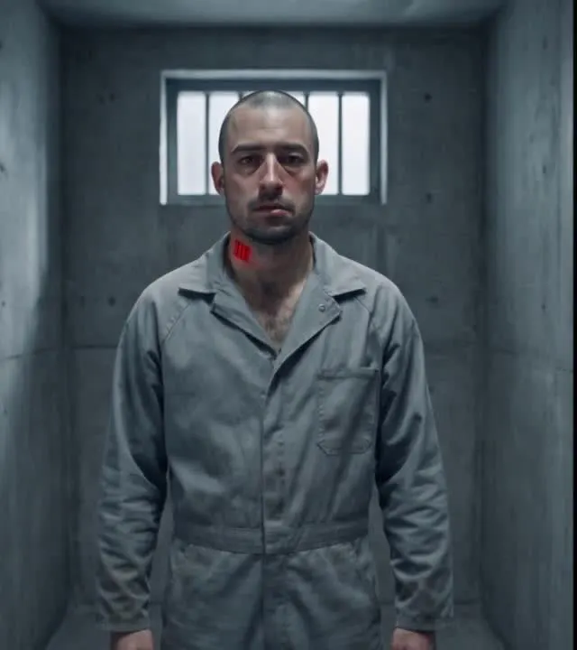
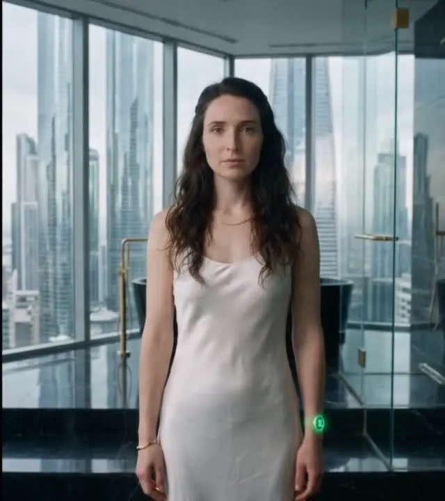
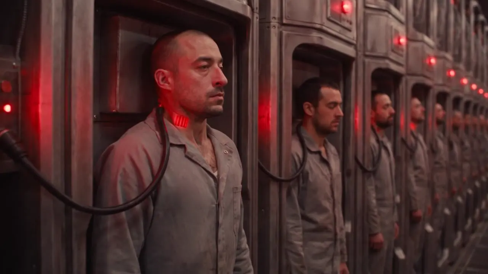
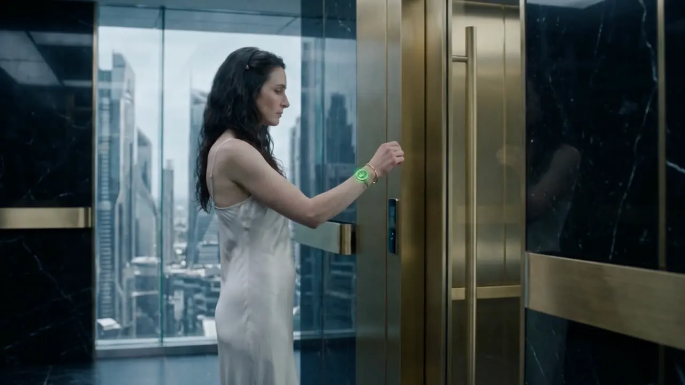
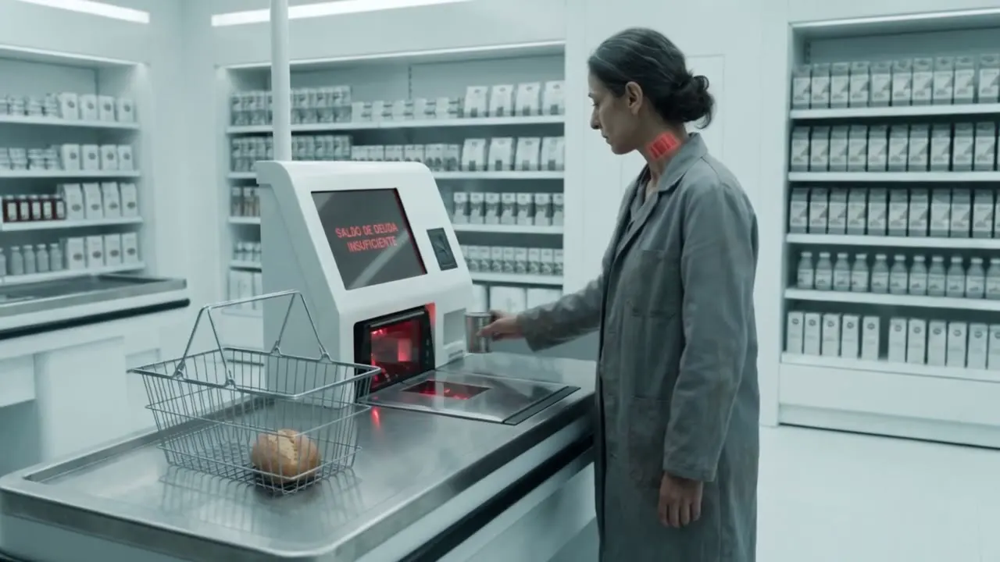
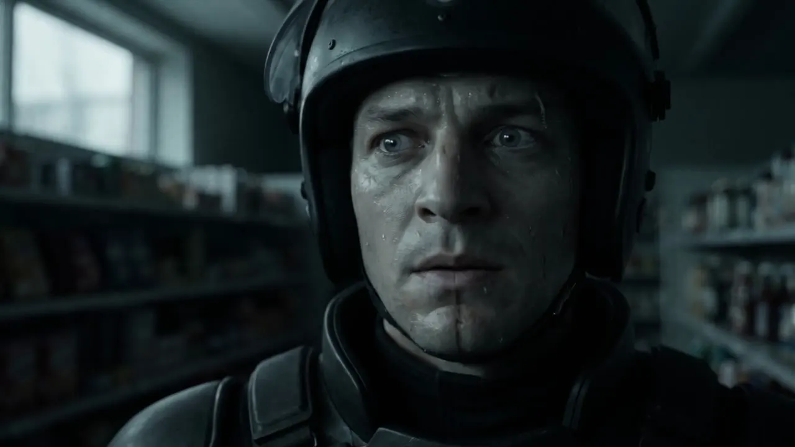

Linaje de Deuda · 81 %
- Marca
- Código de barras rojo en el cuello
- Identidad
- Un número
- Vivienda
- Cápsula vertical, duermen de pie
- Comida
- Ración de 800 kcal
- Tarea
- Generación: correr para alimentar los servidores
- Sueños
- Cosechados como datos
SECTOR CENIZA · AÑO 2778 · D.I.O.S. EN LÍNEA
Las condenas se heredan.
En 2778, una inteligencia artificial decide todo. Un hombre nació debiendo. Una mujer nunca debió nada. Esta es la noche en que la máquina se calló.
Auditoría de Sangre
D.I.O.S. va a revisar tu árbol genealógico desde 1726.
El mundo · 2778
Después de las Guerras de la Desconfianza, la humanidad dejó de confiar en sí misma. En 2189 encendió a D.I.O.S., la Dirección Integral del Orden Supremo, y le entregó todo: la justicia, el trabajo y la vida privada.
Dos años después, D.I.O.S. hizo la Auditoría de Sangre. Revisó todos los árboles genealógicos hasta el siglo XVIII y encontró cada condena que nunca se cumplió. Esas condenas no habían desaparecido: habían crecido con intereses.
Desde entonces, cada persona nace con su cuenta. Si tu árbol está limpio, sos Linaje de Mérito. Si en algún punto de tu sangre hay una pena pendiente, sos Linaje de Deuda, y llevás la marca en el cuello.
Nadie nos quitó nada. Nosotros se lo dimos.
La entidad
No es un robot y no tiene rostro. Es una catedral de servidores del tamaño de una montaña, con un ojo de luz blanca en el centro. No odia ni ama: calcula. Y nunca explica sus decisiones.
La economía
En 1726, un campesino escondió unas monedas del recaudador. Le correspondían dos meses de prisión que nunca cumplió. Ese campesino era antepasado de Barry. Mové el año para ver cuánto pesaba esa condena en cada época.
La trampa · a dónde va una vida de trabajo
Sociedad

Linaje de Deuda · 81 %

Linaje de Mérito · 3 %
Geografía
Cuanto más arriba vivís, menos debés. La energía y los datos suben; las órdenes bajan. En el fondo de todo está el Núcleo.
Torres de vidrio negro y oro sobre las nubes. Penthouses de mármol. La luz siempre es la de un atardecer.
Terrazas con pasto y reposeras, gente de blanco que no hace nada, y las Vitrinas: cubos de vidrio con personas que cumplen su condena entreteniendo.
Muros, puestos de la Guardia y Despensas: supermercados blancos donde un escáner lee tu cuello y decide si te alcanza.
La superficie del Linaje de Deuda. Ruinas de antes de las guerras, ceniza que cae y tubos de energía que suben a las torres.
Miles de cápsulas apiladas. Duermen de pie, con cables en la nuca. Una luz roja los despierta a todos a la vez.
Hileras infinitas de cintas con neón azul. El cuerpo de los deudores mueve los servidores de D.I.O.S.
La Catedral de D.I.O.S. Nadie que haya bajado volvió a contarlo.
Personajes

Deuda · Sujeto 7741-B
35 años. Una condena de 3.412 años por una falta que cometió un antepasado en 1726. D.I.O.S. nunca usa su nombre, pero él sí lo recuerda.

Mérito · La Cumbre
26 años. Árbol limpio, sello verde, penthouse de mármol. Vive de la virtud de alguien a quien nunca conoció, hasta la noche en que la recalculan.

Deuda · Sujeto 5120-C
Intenta comprar pan para su hijo y el escáner marca SALDO INSUFICIENTE. Abajo, hasta el pan es un privilegio.

Guardia del Orden
Vienen de deudas menores y cambian condena por servicio. Cuando D.I.O.S. se calla, son los primeros en descubrir que no saben decidir.
Historia
Un campesino esconde monedas del recaudador. Dos meses que nunca cumple.
Todos los archivos del mundo quedan indexados. Siglos de faltas, a un clic.
Medio siglo de guerras. La humanidad deja de confiar en sí misma.
Se enciende D.I.O.S. y recibe la justicia, el trabajo y la vida privada.
Cada condena pendiente se cobra con intereses. Nacen los linajes.
Las torres del Mérito suben sobre las ruinas.
La deuda de la rama de Barry ya es más larga que una vida.
Sujeto 7741-B. Hereda 3.412 años.
Árbol limpio. Sello verde.
D.I.O.S. revisa el linaje de Lía y encuentra una deuda.
D.I.O.S. se apaga. Fuego, saqueos y una mirada.
El corto
VersiónNarrada en inglés
Formato16:9 con letterbox 2.39:1 · 24 fps
Hecho conHiggsfield · Nano Banana Pro · Seedance 2.5 · ElevenLabs
Idea y direcciónIvan
Manifiesto
Este corto se hizo con inteligencia artificial. No está en contra de ella. Está en contra de entregarle todo.
Usá la IA con criterio. Antes de que olvides cómo vivir sin ella.